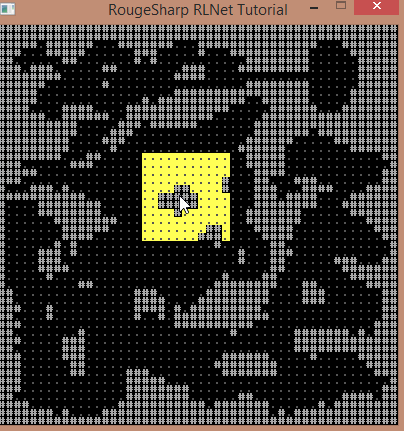
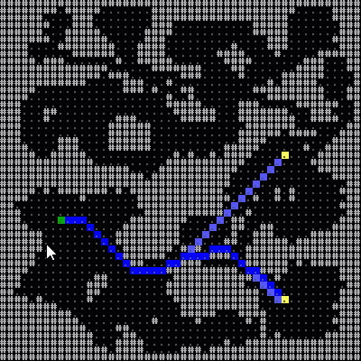

RogueSharp


What is RogueSharp
RogueSharp is a free library written in C# to help roguelike developers get a head start on their game. RogueSharp provides many utility functions for dealing with map generation, field-of-view calculations, path finding, random number generation and more.
It is loosely based on the popular libtcod or "Doryen Library" though not all features overlap.
Getting Started
- Visit the RogueSharp Blog for tips and tutorials.
- The quickest way to add RogueSharp to your project is by using the RogueSharp nuget package.
- If building the assembly yourself, the solution file "RogueSharp.sln" contains the main library and unit tests. This should be all you need.
- Class documentation is located on Github Pages.
Features
Pathfinding
With or without diagonals

/// Constructs a new PathFinder instance for the specified Map
/// that will consider diagonal movement by using the specified diagonalCost
public PathFinder( IMap map, double diagonalCost )
/// Returns a shortest Path containing a list of Cells
/// from a specified source Cell to a destination Cell
public Path ShortestPath( ICell source, ICell destination )
Cell Selection
Select rows, columns, circles, squares and diamonds with and without borders.

/// Get an IEnumerable of Cells in a circle around the center Cell up
/// to the specified radius using Bresenham's midpoint circle algorithm
public IEnumerable<ICell> GetCellsInCircle( int xCenter, int yCenter, int radius )
/// Get an IEnumerable of outermost border Cells in a circle around the center
/// Cell up to the specified radius using Bresenham's midpoint circle algorithm
public IEnumerable<ICell> GetBorderCellsInCircle( int xCenter, int yCenter, int radius )
Weighted Goal Maps
Set multiple goals weights for desirability. Add obstacles to avoid.

/// Constructs a new instance of a GoalMap for the specified Map
/// that will consider diagonal movements to be valid if allowDiagonalMovement is set to true.
public GoalMap( IMap map, bool allowDiagonalMovement )
/// Add a Goal at the specified location with the specified weight
public void AddGoal( int x, int y, int weight )
/// Add an Obstacle at the specified location. Any paths found must not go through Obstacles
public void AddObstacle( int x, int y )
Field-of-View
Efficient field-of-view calulation for specified distance. Option to light walls or not.

/// Constructs a new FieldOfView objec for the specified Map
public FieldOfView( IMap map )
/// Performs a field-of-view calculation with the specified parameters.
public ReadOnlyCollection<ICell> ComputeFov( int xOrigin, int yOrigin, int radius, bool lightWalls )
/// Performs a field-of-view calculation with the specified parameters
/// and appends it any existing field-of-view calculations.
public ReadOnlyCollection<ICell> AppendFov( int xOrigin, int yOrigin, int radius, bool lightWalls )
Creating a Map
Most interactions with RogueSharp is based around the concept of a Map which is a rectangular grid of Cells.
Each Cell in a Map has the following properties:
IsTransparent: true if visibility extends through theCell.IsWalkable: true if a theCellmay be traversed by the playerIsExplored: true if the player has ever had line-of-sight to theCellIsInFov: true if theCellis currently in the player's field-of-view
To instantiate a new Map you can use its constructor which takes a width and height and will create a new map of those dimensions with the properties of all Cells set to false.
Simple Map Creation - Usage
IMap boringMapOfSolidStone = new Map( 5, 3 );
Console.WriteLine( boringMapOfSolidStone.ToString() );
Simple Map Creation - Output
#####
#####
#####
Notice that the ToString() operator is overridden on the Map class to provide a simple visual representation of the map. An optional bool parameter can be provided to ToString() to indicate if you want to use the field-of-view or not. If the parameter is not given it defaults to false.
The symbols used are as follows:
%:Cellis not in field-of-view.:Cellis transparent, walkable, and in field-of-views:Cellis walkable and in field-of-view (but not transparent)o:Cellis transparent and in field-of-view (but not walkable)#:Cellis in field-of-view (but not transparent or walkable)
A more interesting way to create a map is to use the Map class's static method Create which takes an IMapCreationStrategy. Some simple classes implementing IMapCreationStrategy are provided with RogueSharp but this is easily extended by creating your own class that implements the strategy.
Random Rooms Map Creation - Usage
IMapCreationStrategy<Map> mapCreationStrategy = new RandomRoomsMapCreationStrategy<Map>( 17, 10, 30, 5, 3 )
IMap somewhatInterestingMap = Map.Create( mapCreationStrategy );
Console.WriteLine( somewhatInterestingMap.ToString() );
Random Rooms Map Creation - Output
#################
#################
##...#######...##
##.............##
###.###....#...##
###...##.#####.##
###...##...###..#
####............#
##############..#
#################